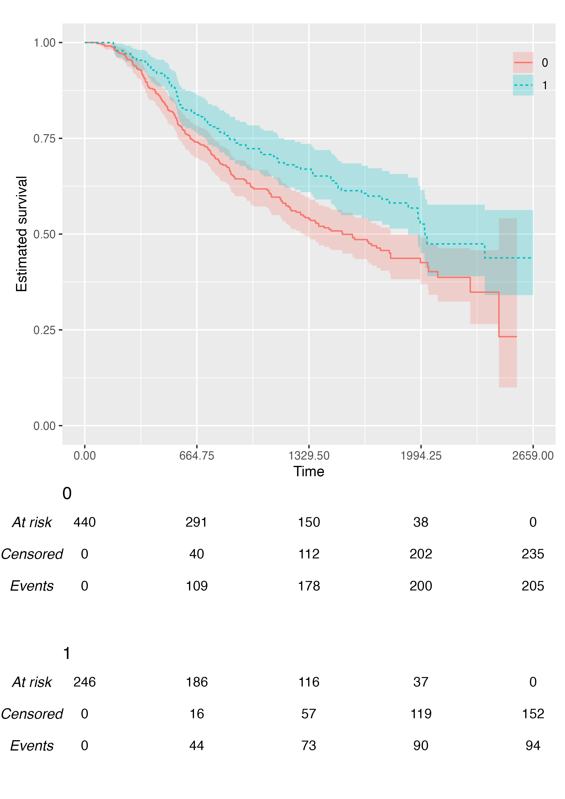

The {KMunicate} package can be used to produce Kaplan-Meier plots in the style recommended following the KMunicate study by TP Morris et al. (2019).
In this vignette, we’ll see learn how to produce such a plot using the {KMunicate} package.
Data
We will be using the brcancer dataset, which comes
bundled with {KMunicate}:
data("brcancer", package = "KMunicate")
str(brcancer)
#> Classes 'tbl_df', 'tbl' and 'data.frame': 686 obs. of 14 variables:
#> $ id : num 1 2 3 4 5 6 7 8 9 10 ...
#> $ hormon : num 0 1 1 1 0 0 1 0 0 0 ...
#> $ x1 : num 70 56 58 59 73 32 59 65 80 66 ...
#> $ x2 : num 2 2 2 2 2 1 2 2 2 2 ...
#> $ x3 : num 21 12 35 17 35 57 8 16 39 18 ...
#> $ x4 : num 2 2 2 2 2 3 2 2 2 2 ...
#> $ x5 : num 3 7 9 4 1 24 2 1 30 7 ...
#> $ x6 : num 48 61 52 60 26 0 181 192 0 0 ...
#> $ x7 : num 66 77 271 29 65 13 0 25 59 3 ...
#> $ rectime: num 1814 2018 712 1807 772 ...
#> $ censrec: num 1 1 1 1 1 1 0 0 1 0 ...
#> $ x4a : num 1 1 1 1 1 1 1 1 1 1 ...
#> $ x4b : num 0 0 0 0 0 1 0 0 0 0 ...
#> $ x5e : num 0.698 0.432 0.34 0.619 0.887 ...
#> - attr(*, "label")= chr "German breast cancer data"Single-Arm Plot
We start by creating a KMunicate-style plot for all study subjects. First, we load the package:
Then, we fit a Kaplan-Meier curve using the survfit
function from the {survival} package:
fit <- survfit(Surv(rectime, censrec) ~ 1, data = brcancer)
fit
#> Call: survfit(formula = Surv(rectime, censrec) ~ 1, data = brcancer)
#>
#> n events median 0.95LCL 0.95UCL
#> [1,] 686 299 1807 1587 2030Then, we need to define the horizontal axis of the plot. For instance, we can define 5 equally-spaced breaks between time zero and the largest observed time:
Finally, we can pass fit and ts to the
KMunicate() function to simply obtain a plot:
KMunicate(fit = fit, time_scale = ts)Multiple-Arms Plot
A multiple-arms plot will be automatically produced if the
survfit object has covariates in it. For instance, if we
fit the Kaplan-Meier estimator by treatment arm:
fit2 <- survfit(Surv(rectime, censrec) ~ hormon, data = brcancer)
fit2
#> Call: survfit(formula = Surv(rectime, censrec) ~ hormon, data = brcancer)
#>
#> n events median 0.95LCL 0.95UCL
#> hormon=0 440 205 1528 1296 1814
#> hormon=1 246 94 2018 1918 NAWe will be using the same time scale as before (ts), and
the call to KMunicate() is analogous:
KMunicate(fit = fit2, time_scale = ts)
Customisation
The KMunicate() function contains a few options to
customise the produced plot. First, we can pass a ggplot2
theme to the .theme argument:
KMunicate(fit = fit2, time_scale = ts, .theme = ggplot2::theme_minimal())We can also pass custom colour (and fill) scales:
KMunicate(
fit = fit2,
time_scale = ts,
.color_scale = ggplot2::scale_color_brewer(type = "qual", palette = "Set2"),
.fill_scale = ggplot2::scale_fill_brewer(type = "qual", palette = "Set2")
)
We can customise the transparency of the point-wise confidence
intervals via the .alpha argument:
KMunicate(fit = fit2, time_scale = ts, .alpha = 0.1)
We can customise the label of the horizontal axis:
KMunicate(fit = fit2, time_scale = ts, .xlab = "New Label (Time in Days, Actually)")
We can customise the relative size of risk tables and plots, although the default should generally work fine for most scenarios:

Custom Fonts
Assuming you have set up your computer and R session to support
custom fonts (e.g. using a ragg
graphics device), you can produce plots with custom fonts via the
.ff argument of the KMunicate() function.
Examples of using ragg can be found here.
A Better Plot
We can combine all the above to obtain an (arguably) much better plot:
KMunicate(
fit = fit2,
time_scale = ts,
.theme = ggplot2::theme_minimal(),
.xlab = "Time (in days)",
.color_scale = ggplot2::scale_color_brewer(type = "qual", palette = "Set2"),
.fill_scale = ggplot2::scale_fill_brewer(type = "qual", palette = "Set2")
)
Further Customisation Options
As of version 0.2.0, {KMunicate} provide additional arguments to customise the final plot.
You can customise the size of each Kaplan-Meier curve via the
.size argument:
KMunicate(
fit = fit2,
time_scale = ts,
.size = 2
)
You can customise the linetype scale via the
.linetype_scale argument:
KMunicate(
fit = fit2,
time_scale = ts,
.linetype_scale = ggplot2::scale_linetype_manual(values = c("dotted", "dashed"))
)
You can customise the location of the legend via the
.legend_position argument, or you can even suppress it
fully:

KMunicate(
fit = fit2,
time_scale = ts,
.reverse = TRUE,
.legend_position = "none"
)You can add custom annotations via the .annotate
argument:
KMunicate(
fit = fit2,
time_scale = ts,
.annotate = ggplot2::annotate(geom = "text", x = 365, y = 0.5, label = "Some annotation")
)
You can add customise labels and title with the .xlab,
.ylab, and .title arguments:
KMunicate(
fit = fit2,
time_scale = ts,
.xlab = "New Label, X Axis",
.ylab = "New Label, Y Axis",
.title = "New Title Who Dis"
)